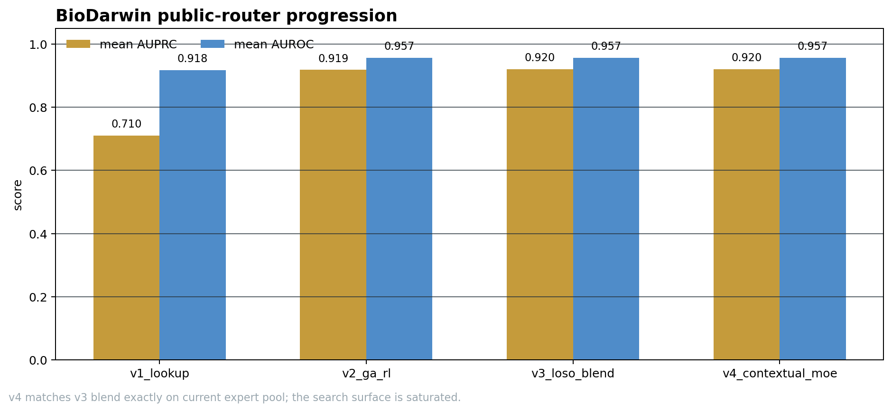
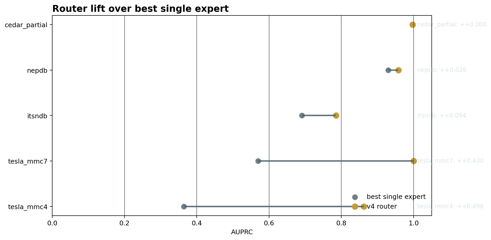
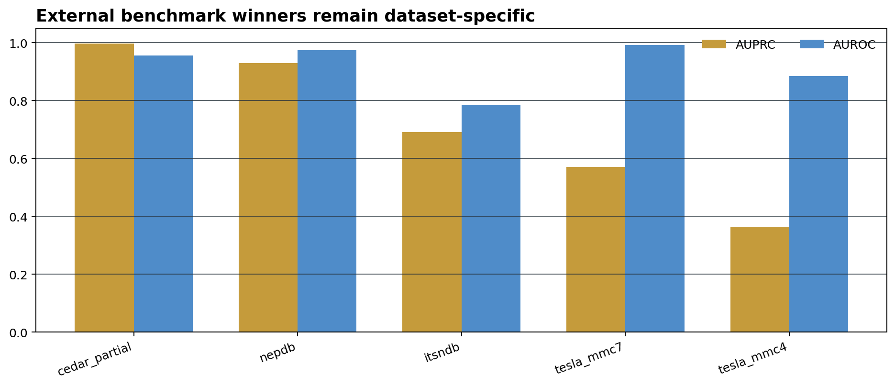

01Executive summary
BioDarwin now beats the best single expert on every binary public bundle. The useful result is not just that the score went up. The system has moved from lookup selection to a genuine GA/RL mixture-of-experts controller, and the current ceiling is now defined by the existing expert pool. In practice: v4 is the operating router, v3 is the claim freeze, and new experts are the only path to another jump.


02Decision matrix
| goal | use | why |
|---|---|---|
| Immediate public routing | v4 contextual MoE | best current public expert pool and strongest overall bundle lift |
| Frozen benchmark claim | v3 LOBO blend | same mean AUPRC as v4 with a simpler bagged story |
| Reviewer-safe comparison | dataset-specific public winner tables | keeps overlap-heavy and low-power rows out of the claim surface |
| Next performance jump | new expert pool / new prospective data | same-pool search is saturated |
03Router progression
| version | mean_AUPRC | mean_AUROC | mean_top10_precision | status | delta_vs_v1_AUPRC | delta_vs_v1_AUROC |
|---|---|---|---|---|---|---|
| v1_lookup | 0.7104 | 0.9177 | lookup baseline | |||
| v2_ga_rl | 0.9186 | 0.9566 | 0.8800 | public-metadata GA/RL MoE | 0.2082 | 0.0389 |
| v3_loso_blend | 0.9205 | 0.9570 | 0.9250 | bagged LOBO blend | 0.2101 | 0.0393 |
| v4_contextual_moe | 0.9205 | 0.9570 | 0.9250 | contextual MoE over saturated pool | 0.2101 | 0.0393 |
04Binary bundle lift
The router lift is easiest to see against the strongest single expert per bundle. Every row below is a binary bundle with a valid metric. The lift is positive on all five bundles.
| bundle | best_single_algorithm | best_single_AUPRC | v1_AUPRC | v4_AUPRC | lift_vs_best_single | lift_vs_v1 |
|---|---|---|---|---|---|---|
| tesla_mmc4 | RF_biophys | 0.3641 | 0.3641 | 0.8623 | 0.4981 | 0.4981 |
| tesla_mmc7 | BigMHC_IM | 0.5701 | 0.5701 | 1.0000 | 0.4299 | 0.4299 |
| itsndb | ESM2_Bayesian | 0.6912 | 0.6912 | 0.7849 | 0.0937 | 0.0937 |
| nepdb | RF_biophys | 0.9300 | 0.9300 | 0.9583 | 0.0284 | 0.0284 |
| cedar_partial | RF_biophys | 0.9967 | 0.9967 | 0.9969 | 0.0002 | 0.0002 |
05External landscape
The public benchmark landscape is still dataset-specific. BioDarwin wins the right regimes, but not every external family. That is why the router is the product, not a single score column.

Reviewer-safe winners
| dataset | algorithm | AUPRC | AUROC | claim_status |
|---|---|---|---|---|
| cedar_partial | MHCflurry | 0.9728 | 0.7372 | local_prediction_file |
| itsndb | DeepImmuno | 0.6109 | 0.7019 | local_prediction_file |
| nepdb | PRIME | 0.5623 | 0.6198 | local_prediction_file |
| tesla_mmc4 | PRIME | 0.1937 | 0.8054 | local_prediction_file |
Best public winners
| dataset | algorithm | AUPRC | AUROC | lane | claim_status |
|---|---|---|---|---|---|
| cedar_partial | RF_biophys | 0.9967 | 0.9555 | public overlap-heavy | local_prediction_file |
| nepdb | RF_biophys | 0.9300 | 0.9731 | public external | local_prediction_file |
| itsndb | ESM2_Bayesian | 0.6912 | 0.7841 | public external | local_prediction_file |
| tesla_mmc7 | BigMHC_IM | 0.5701 | 0.9918 | public external | local_prediction_file |
| tesla_mmc4 | RF_biophys | 0.3641 | 0.8839 | public external | local_prediction_file |
06Claim boundary
This is a retrospective development result. It supports a strong wetlab routing strategy and a frozen prospective validation plan, but it is not a universal claim that one model beats every public benchmark. The strongest sentence is: BioDarwin public-router v4 lifts all five binary bundles over their best single experts and improves the mean AUPRC from 0.7104 to 0.9205 on the current public pool.
| artifact | status | why it matters |
|---|---|---|
| v1 lookup | baseline | dataset-family routing only |
| v2 GA/RL | major gain | public-metadata MoE lifts mean AUPRC to 0.9186 |
| v3 LOBO blend | best current blend | stable bagged router, mean AUPRC 0.9205 |
| v4 contextual MoE | saturated | collapses onto v3 blend; no extra gain from same pool |
07Paths
HTML: /home/seungho/personal/THCA_data_analysis/project/papers_hub_2026_05_04/biodarwin_public_router_impact_dossier.html
Figures: /home/seungho/personal/THCA_data_analysis/project/papers_hub_2026_05_04/assets/biodarwin_public_router_impact_dossier
Source tables: /home/seungho/personal/THCA_data_analysis/project/results/biodarwin_external_mega_comparison_2026_05_11